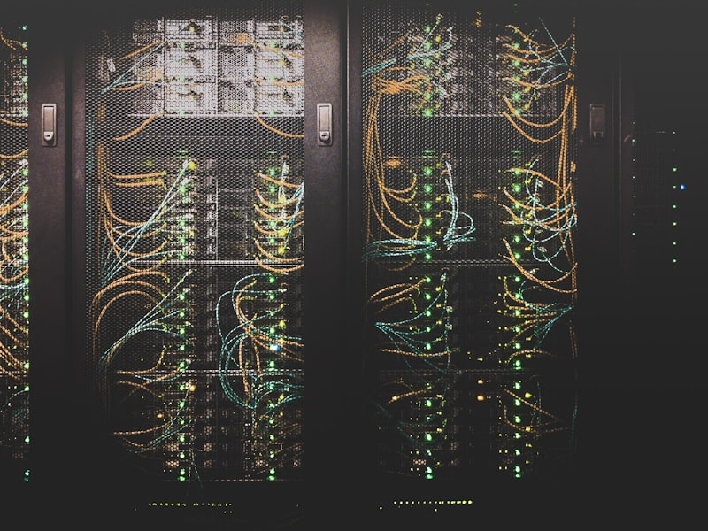

Internet, Website, Basis Data & Media Sosial
Memahami infrastruktur internet, cara kerja website dan basis data, serta peran media sosial dalam masyarakat digital
Agenda Pertemuan
Internet sebagai Jaringan Global
TCP/IP, DNS, dan fondasi konektivitas dunia
Cara Kerja Internet
Paket data, routing, dan perjalanan informasi
Cloud Computing
IaaS, PaaS, SaaS — komputasi awan modern
Anatomi Website & Basis Data
HTML/CSS/JS, SQL vs NoSQL
Media Sosial & Literasi Digital
Evolusi platform dan kecakapan digital
Internet: Jaringan dari Jaringan
TCP/IP
| TCP | Membagi & menyusun data |
| IP | Alamat pengirim & tujuan |
| Port | Jalur layanan (80, 443) |
DNS
| Fungsi | Domain → IP address |
| Analogi | Buku telepon internet |
| Contoh | google.com → 142.250.x.x |

Bagaimana Internet Bekerja?
🖥️ Client
Kirim request HTTP
📡 ISP
Penyedia akses
🔀 Router
Cari jalur terbaik
🖥️ Server
Proses & kirim balasan
Paket Data
- Data dipecah menjadi paket-paket kecil
- Setiap paket punya header (alamat tujuan)
- Paket bisa lewat jalur berbeda
- Disusun ulang di tujuan oleh TCP
Routing
- Router membaca alamat IP tujuan
- Memilih jalur tercepat/terdekat
- BGP mengatur routing antar ISP
- Setiap hop = satu router
Cloud Computing
IaaS
Infrastructure as a Service — Virtual server, storage, jaringan. Contoh: AWS EC2, Google Compute Engine
PaaS
Platform as a Service — Lingkungan development tanpa kelola infrastruktur. Contoh: Heroku, Google App Engine
SaaS
Software as a Service — Aplikasi siap pakai via browser. Contoh: Gmail, Google Docs, Zoom
Anatomi Website
HTML
Struktur — Tag seperti <h1>, <p>, <div> membangun kerangka halaman
CSS
Presentasi — Warna, font, layout, animasi. Membuat website menarik
JavaScript
Interaktivitas — Validasi form, animasi, update tanpa reload halaman
Browser
Klien (Chrome, Firefox)
Web Server
Apache, Nginx
Database
MySQL, MongoDB
Basis Data: SQL vs NoSQL
SQL (Relasional)
- Tabel dengan baris & kolom
- Skema tetap (rigid)
- Query bahasa SQL
- Contoh: MySQL, PostgreSQL
NoSQL (Non-Relasional)
- Dokumen, key-value, graf
- Skema fleksibel
- Skalabilitas horizontal
- Contoh: MongoDB, Redis
Tabel Relasional
Dokumen / Key-Value
Perbandingan SQL vs NoSQL
| Aspek | SQL | NoSQL |
|---|---|---|
| Struktur | Tabel baris & kolom | Dokumen, graf, key-value |
| Skema | Tetap (schema-on-write) | Fleksibel (schema-on-read) |
| Skalabilitas | Vertikal (naik spesifikasi) | Horizontal (tambah node) |
| Konsistensi | ACID (ketat) | BASE (eventual) |
| Contoh Kasus | Banking, e-commerce | IoT, big data, real-time |
Evolusi Media Sosial
2004
Facebook
Era jejaring sosial
2006
Twitter
Mikroblogging
2010
Instagram
Konten visual
2011
Snapchat / WhatsApp
Messaging instan
2016
TikTok
Video pendek & AI feed
dunia (2024)
per hari
per pengguna
Literasi Digital
Cari & Verifikasi
Cek fakta sebelum membagikan. Gunakan sumber terpercaya
Keamanan Digital
Password kuat, 2FA, waspada phishing & social engineering
Etika Digital
Hormati privasi, hindari cyberbullying, hormati hak cipta
Berpikir Kritis
Kenali bias algoritma, filter bubble, dan echo chamber
Post-Test: Uji Pemahaman
Post-Test: Jawaban
Poin-Poin Penting Pertemuan 3
Terima Kasih
Internet menghubungkan, website menampilkan, database menyimpan, dan media sosial menghubungkan kita semua. Memahami ekosistem ini berarti memahami dunia digital tempat kita hidup.
Pertemuan 4: Aplikasi & Etika Teknologi Digital di Berbagai Bidang